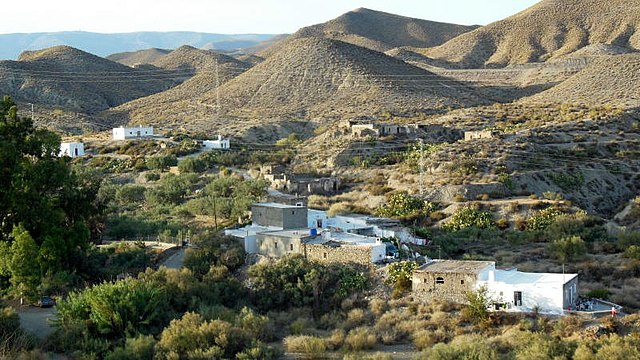
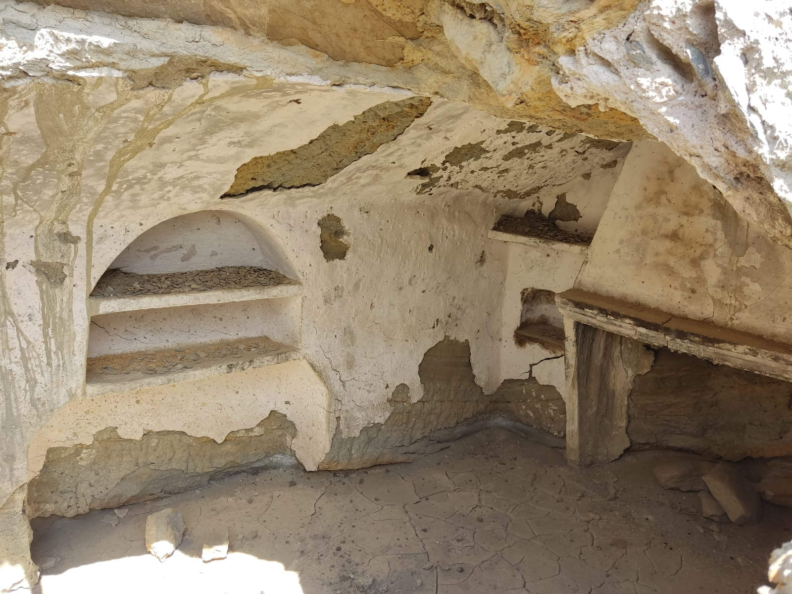
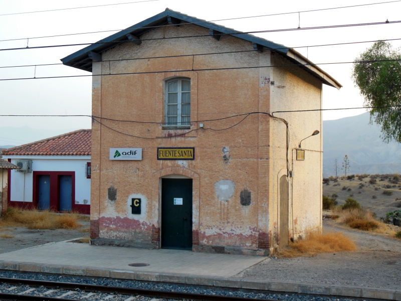
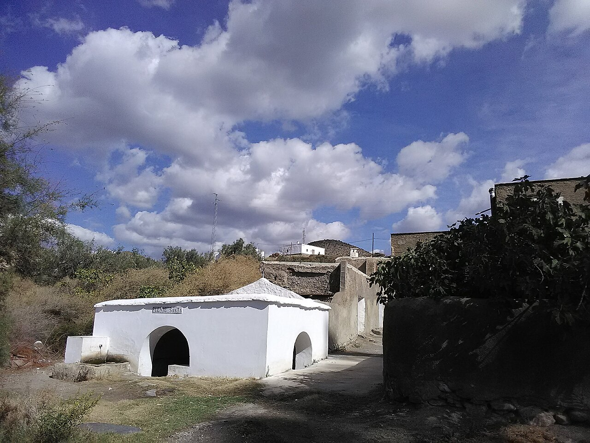
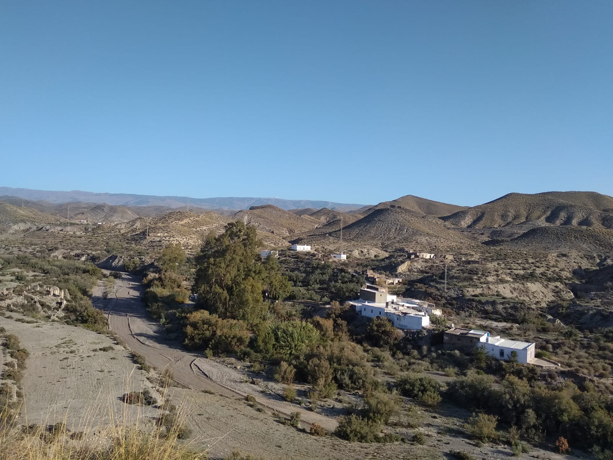

Vista desde la cumbre de un cerro de la plaza del pueblo. Al fondo se pueden apreciar las vías del tren.

Interior en ruinas de una de las típicas casas cueva que abundan en Fuente Santa.

La estación abandonada.

La fuente que da nombre al pueblo.

Vista desde un cerro del pueblo y la rambla.